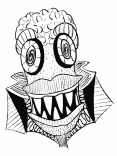

There's a weird cast of characters that live in the margins of my notebooks
They don't have names

And they dont exist in stories
They are just a bunch of doodles
That bring me joy
Some are weirder than others...
But I like those the most
Look at this happy dude! ->